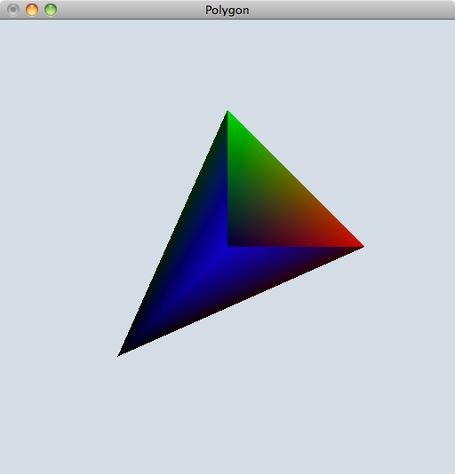

例 面データの可視化
四面体を描画するプログラムを作成します．
PolygonObjectはメンバ変数として，
- ポリゴンの種類（enum型 {Triangle, Quadrangle} ）
- 色の種類（enum型 {VertexColor, PolygonColor} ）
- 法線の種類（enum型 {VertexNormal,PolygonNormal} ）
- 接続情報（kvs::ValueArray<kvs::UInt32>）
- 透明度（kvs::ValueArray<kvs::UInt8>）
- 頂点座標（kvs::ValueArray<kvs::Real32>）
- 色（kvs::ValueArray<kvs::UInt8> ）
- 法線（kvs::ValueArray<kvs::Real32>）
があります．
この例では作成したオブジェクトを可視化の為に定義されているScreenクラスへ登録し，描画を行います．
1. 作業ディレクトリの作成
作業ディレクトリに「ViewPolygon」というディレクトリを作成して，移動して下さい．
$ mkdir ViewPolygon
$ cd ViewPolygon
2. main.ccp の作成
「main.cpp」というファイルを作成して下さい．
作成する四面体の
- 頂点座標
- 頂点色
- 頂点法線
- 接続情報
を配列に代入します．
KVSのオブジェクトに渡すために，配列は一旦Vectorコンテナに格納しておきます．
また，OpenGLによる描画のためにmain関数には引数をもたせて下さい．
int main( int argc, char** argv )
{
// 頂点座標
kvs::Real32 vertex[] = { -1.0, -1.0, -1.0, // 第0頂点座標
1.0, 0.0, 0.0, // 第1頂点座標
0.0, 1.0, 0.0, // 第2頂点座標
0.0, 0.0, 1.0 }; // 第3頂点座標
// 頂点色
kvs::UInt8 vertCol[] = { 0, 0, 0, // 第0頂点の色
255, 0, 0, // 第1頂点の色
0, 255, 0, // 第2頂点の色
0, 0, 255 }; // 第3頂点の色
// 頂点法線
kvs::Real32 norm[] = { -0.577, -0.577, -0.577, // 第0頂点の法線
0.577, -0.577, -0.577, // 第1頂点の法線
-0.577, 0.577, -0.577, // 第2頂点の法線
-0.577, -0.577, 0.577 }; // 第3頂点の法線
// 接続情報
kvs::UInt32 tri[] = { 0, 2, 1,
0, 1, 3,
0, 3, 2,
3, 2, 1 };
// Vectorコンテナに格納
std::vector<kvs::Real32>coords( vertex, vertex + 12 );
std::vector<kvs::UInt32>connects( tri, tri + 12 );
std::vector<kvs::UInt8>colors( vertCol, vertCol + 12 );
std::vector<kvs::Real32>normals( norm, norm + 12 );
return ( 0 );
}
3. 面データ（PolygonObject）の作成
面データ（PolygonObject）を作成します．
ここでは，kvs::PolygonObjectのインスタンスを生成した後に，データをセットします．
セットするデータは以下の8種類です．
- 頂点座標（kvs::ValueArray<kvs::Real32>）
- 接続情報（kvs::ValueArray<kvs::UInt32>）
- 色（kvs::ValueArray<kvs::UInt8> ）
- 透明度（kvs::ValueArray<kvs::UInt8>）
- 法線（kvs::ValueArray<kvs::Real32>）
- ポリゴンの種類
- 色の種類
- 法線の種類
です．
ここでは，ポリゴンの種類をTriangle，色と法線の情報はそれぞれ頂点に付加されているとし，
また，不透明度は常に一定（255は不透明）であるとして，kvs::UInt8型の変数を１つ渡しています．
// オブジェクトの作成
kvs::PolygonObject* object = new kvs::PolygonObject( );
// データのセット
object->setCoords( kvs::ValueArray<kvs::Real32>( coords ) ); // 頂点情報
object->setConnections( kvs::ValueArray<kvs::UInt32>( connects ) ); // 接続情報
object->setColors( kvs::ValueArray<kvs::UInt8>( colors ) ); // 色情報
object->setOpacity( 255 ); // 不透明度
object->setNormals( kvs::ValueArray<kvs::Real32>( normals ) ); // 法線情報
object->setPolygonType( kvs::PolygonObject::Triangle ); // ポリゴンの種類
object->setColorType( kvs::PolygonObject::VertexColor ); // 色情報の種類
object->setNormalType( kvs::PolygonObject::VertexNormal ); // 法線情報の種類
描画する範囲を決定するために，座標値の最大値と最小値をあらかじめ計算しておきます．
object->updateMinMaxCoords();
4. 描画
OpenGLによる可視化のために，GLUTの初期化を行います．
KVSでは，GLUTの関数を簡単に使用できるようにkvs::glut::Applicationクラスによって定義することができます．
kvs::glut::Application app( argc, argv );
OpenGLでは，ウィンドウの生成やサイズ・背景色の設定を行う関数を呼び，それぞれ設定を行います．
KVSではそれらの関数はkvs::glut::Screenのメソッドして定義されています．
また，キーイベントやマウスイベントについてもKVS内で定義されており，
ユーザが設定を行わずともキーやマウスの操作がGLUTウィンドウ上で可能となります．
ここでは
- ＊ウィンドウの左上の位置とウィンドウサイズを設定するメソッドsetGeometry( )
- ＊ウィンドウタイトルを設定するメソッドsetTitle()
を使用します．
また，可視化したいオブジェクトはregisterObject( )を用いてスクリーンクラスに登録します．
その後，show()を呼ぶと適当なRenderer を用いてオブジェクトが描画されます．
Renderer については次節( 可視化パイプライン )で説明します．
最後に，イベント待ち状態にするために，kvs::glut::Applicationクラスのメソッドrun()を呼びます．
// Screenクラスの生成と設定
kvs::glut::Screen screen( &app );
screen.registerObject( object );
screen.setGeometry( 0, 0, 512, 512 );
screen.setTitle( "Polygon");
screen.show();
// イベント待ち
return( app.run() );
5. ヘッダファイル
使用したKVSクラスをインクルードします．
ここでは，
- kvs::PolygonObject
- kvs::glut::Screen
- kvs::glut::Application
を使いました．
#include <kvs/PolygonObject>
#include <kvs/glut/Application>
#include <kvs/glut/Screen>
6. まとめ
以上をまとめたプログラムはこちら： ViewPolygon.tgz
7. コンパイルと実行
作成したプログラムをコンパイル，実行してみましょう．
KVSプログラムをコンパイルするためにはkvsmakeコマンドを用いてMakefileを作成すると簡単にコンパイルを行うことができます．
$ kvsmake -G <-- Makefile の作成
$ kvsmake <-- コンパイル
エラーなくコンパイルできたら，実行してみましょう．
実行すると，以下のような四面体が描画されます．
$ ./ViewPolygon

PolygonObjectの可視化
※ Window を閉じる場合には『esc』キーで終了します．
また，マウスは左ボタンで回転，右ボタンで移動，真ん中ボタンは拡大／縮小です．
問題 ワイヤーフレーム表示
上述の四面体のワイヤーフレーム を表示してみよう．
ワイヤーフレーム表示のために，kvs::PolygonObjectではなくkvs::LineObjectを作成する．
コンストラクタの要求する引数は
- 頂点座標（kvs::ValueArray<kvs::Real32>）
- 接続情報（kvs::ValueArray<kvs::UInt32>）
- 色（kvs::ValueArray<kvs::UInt8> ）
- 線の太さ( kvs::Real32 )
- 線の種類
- 色の種類
です．LineObject クラスのもつメンバ変数としては，
頂点情報，接続情報，色はPolygonObjectと同じです．LineObject クラスがもつ変数としては
- 線の種類（enum型 {Strip, Uniline, Polyline, Segment, UnknownLineType} )
- 線の太さ
があります．
（ヒント）
LineObject は以下の様に宣言することができます．
kvs::LineObject* object = new kvs::LineObject( );
object->setCoords( kvs::ValueArray<kvs::Real32>( coords ) ); // 頂点情報
object->setConnections( kvs::ValueArray<kvs::UInt32>( connects ) ); // 接続情報
object->setColors( kvs::ValueArray<kvs::UInt8>( colors ) ); // 色情報
object->setSize( 3.0 ); // 線の太さ
object->setLineType( kvs::LineObject::Uniline); // 線の種類
object->setColorType( kvs::LineObject::VertexColor ); // 色の種類
ここでは，上の例と同じ頂点，色，接続情報を用いて「Uniline」を使って線を描画しています．
線の種類を変えるとどのような描画結果になるのか試してみましょう．
Modefied at June 16, 2013
at April 24, 2017